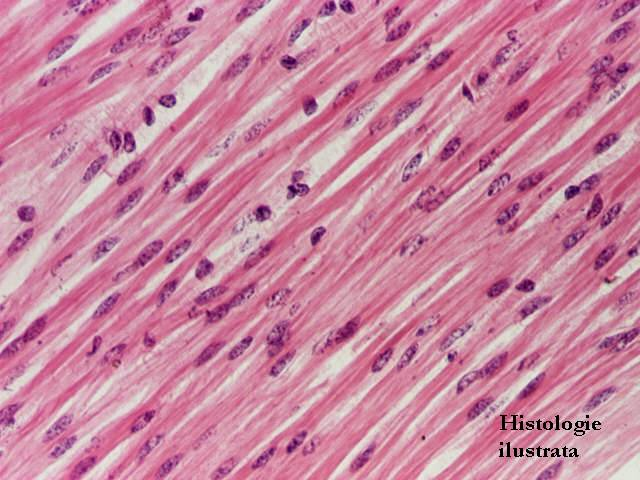
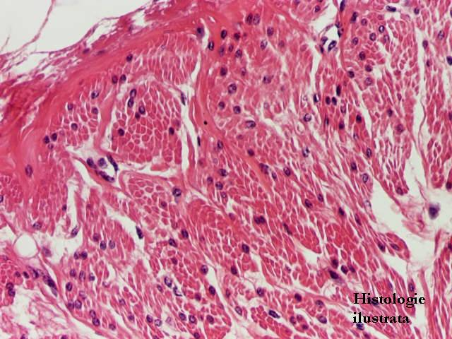
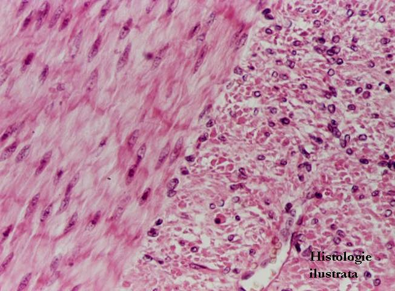
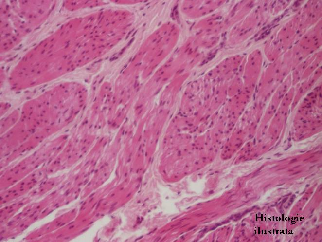
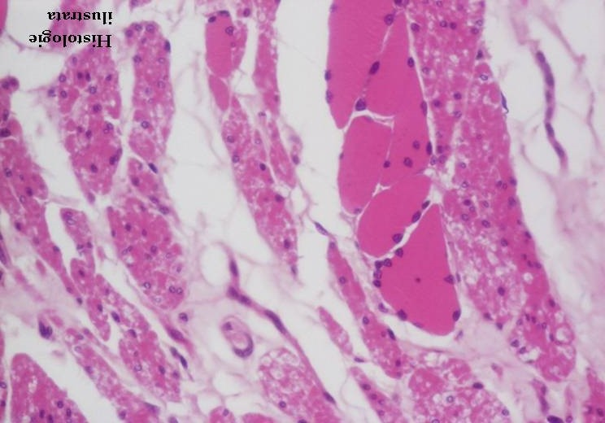

Cap.3 - Ţesutul muscular
3.3. Ţesutul muscular neted




Fig. 130 - Fibre musculare netede – secţiune longitudinală, jejun, H.E. X 200
Fig. 131 - Fibre musculare netede – secţiune longitudinală, H.E. X 400
Fig. 132 - Fibre musculare netede – secţiune transversală, esofag, H.E. X 200
Fig. 133 - Fibre musculare netede – secţiune transversală, H.E. X 400



Fig. 134 - Fibre musculare netede în stroma prostatei –
H.E. X 200
Fig. 135 - Fibre musculare netede în corionul vilozităţii intestinale (muşchiul lui Brücke) - jejun,
H.E. X 200
Fig. 136 - Fascicol de fibre musculare netede – muşchiul erector al firului de păr,
H.E. X 100
Fig. 137 - Fibre musculare netede cu dispoziţie în straturi - jejun, H.E. X 200





Fig. 138 - Fibre musculare netede cu organizare plexiformă – vezică urinară,
H.E. X 100
Fig. 139 - Fibre musculare netede cu organizare plexiformă – miometru, H.E. X 40
Fig. 140 - Ţesut muscular striat şi ţesut muscular neted – treimea mijlocie a esofagului, H.E. X 400